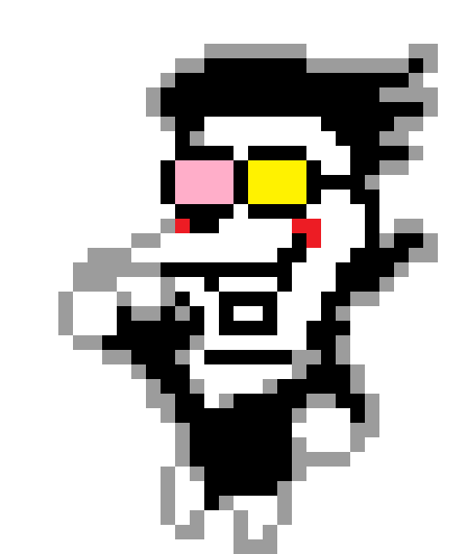
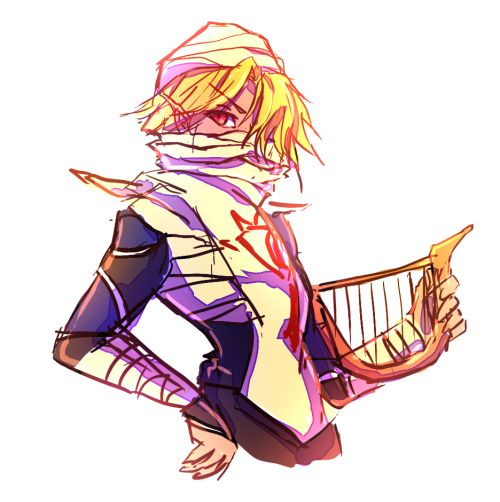

No sé cómo redactar un inicio siempre se me ha complicado, supongo que hola, ¿qué tal?, muy monótono xD
no creo que importe tampoco o sí?
Bueno en cualquier caso espero que te guste la página que diseñe, intente hacerlo lo mejor que pude, aunque probablemente es mucho texto pero
simplemente quiero plasmar mis emociones y que las veas cuando tú quieras. Realmente disfruté realizar esta página, estuve recordando algunos
problemas que se me daban al momento de programar y errores que en ese entonces pensaba que no tenía solución ya que no me daba el trabajo de buscar solución y ahora
veo que era muy simple xD, supongo que es mi el mejor proyecto que he realizado hasta el momento.
Esta página está en su base es HTML y la estética es con CSS al final no logre comprender tan bien Python y no sé cómo emularlo xD. Así que al final decidí utilizar lo que realmente conozco, quiero explicártelo en detalle probablemente hare en un video, así que sin más preámbulo te dejare ver las demás paginas todas están hechas con cariño
-Sheik
Como se menciona el paso de la vida puede ser rápida o lenta independientemente de nosotros, las personas pueden quedarse o irse es voluntad de ellas no nuestra, lo importante es continuar y no estancarse en un momento especifico que solo atraiga cosas negativas hacia nosotros, siempre se puede intentar fluir y de no lograrse buscar la manera de superar eso que nos frena, puede que vayamos contra la corriente o que ella nos lleve, pero también debemos recordar confiar en nosotros mismos en todo. Después de todo siempre estamos en constante cambio y a veces necesitamos que nos muestren lo que nosotros no podemos llegar a ver.